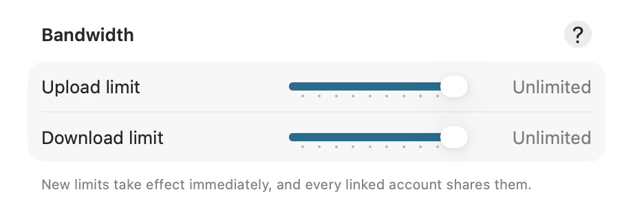

Un gros envoi peut saturer entièrement une connexion. Vous pouvez limiter Zephyr à un débit de votre choix, dans chaque sens.

Cliquez sur Zephyr dans la barre des menus, puis sur Réglages…
Faites défiler jusqu’à Débit.
Faites glisser le curseur Limite de transfert ou Limite de téléchargement.
Le débit défini s’affiche à côté. Les crans vont de 250 ko/s en bas de la course jusqu’à 100 Mo/s, puis Illimité tout en haut. Il n’y a aucun cran en dessous de 250 ko/s.
Les nouvelles limites s’appliquent immédiatement — un transfert déjà en cours ralentit au lieu d’attendre la fin. Il n’y a rien à enregistrer.
Remarque : Une limite appartient à ce Mac, et non à un seul compte. Si plusieurs comptes sont associés, ils la partagent : deux comptes qui se synchronisent en même temps restent, à eux deux, sous le débit que vous avez défini, au lieu de s’en octroyer chacun la totalité.
Un réseau facturé à l’usage est un réseau dont l’utilisation vous coûte : un point d’accès personnel, une connexion que macOS considère comme coûteuse, ou une connexion que vous avez placée en mode Faibles données. Zephyr modère son activité sur ces réseaux, et la section Réseaux facturés à l’usage vous permet de régler jusqu’où. Elle reste repliée tant que vous ne cliquez pas dessus.
Cliquez sur Zephyr dans la barre des menus, puis sur Réglages…
Cliquez sur Réseaux facturés à l’usage.
Faites glisser le curseur Limite de débit. Il démarre à 250 ko/s.
Contrairement aux curseurs ci-dessus, ce débit unique plafonne aussi bien les envois que les téléchargements, et seulement lorsque vous êtes sur un réseau qui coûte quelque chose. Il plafonne les limites ci-dessus sans les remplacer : c’est la valeur la plus basse qui s’applique.
Activez Continuer l’indexation si vous pouvez utiliser librement la connexion de ce Mac.
Sinon, Zephyr attend un réseau moins cher avant d’indexer votre Dropbox ou de rechercher des modifications — le travail que personne n’a demandé. Les fichiers que vous ouvrez se téléchargent dans tous les cas, sur n’importe quel réseau.
Remarque : Le mode Faibles données empêche toujours l’indexation, quel que soit le réglage de Continuer l’indexation. Activer le mode Faibles données est une instruction que vous avez donnée à macOS, alors que « coûteux » n’est qu’une supposition de macOS — et vous ne pouvez passer outre qu’à cette supposition.
L’envoi est celui qu’il vaut la peine de limiter sur la plupart des connexions domestiques, où le débit montant est bien plus faible que le débit descendant, et partagé avec les appels vidéo.
Le téléchargement a rarement besoin d’être limité, puisque Zephyr ne télécharge que ce que vous ouvrez.
Si vous voulez que Zephyr s’arrête complètement plutôt que de ralentir, suspendez-le — consultez Suspendre la synchronisation.